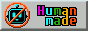
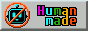

Happy May!
After the long winter... and April showers- it's finally May! I'm trying to update my website a little bit this month. The biggest update is that my blog is now part of this website! (I'm too lazy to maintain two sites actively.)
Read my newest comic, Cursed Relics!
Follow Bryony and Monilestriel Monilestriel's body as they explore the Florian ruins and the artifacts within.
Other Places to Find Me


 
